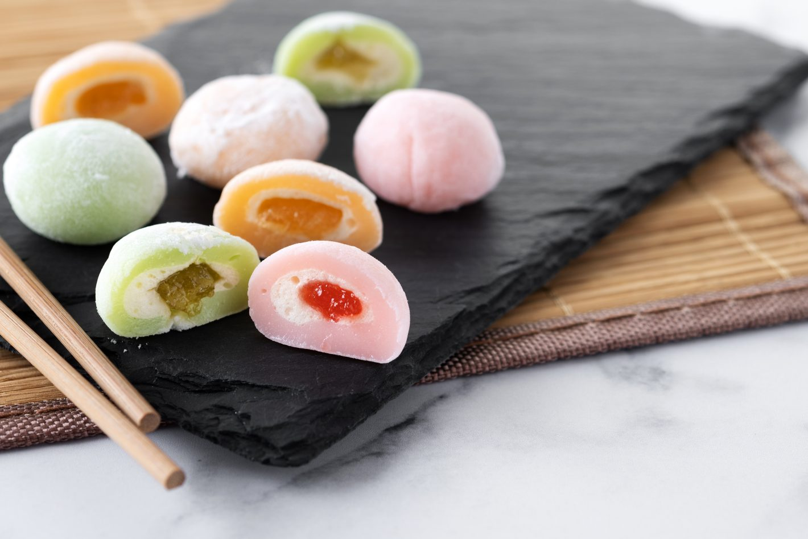
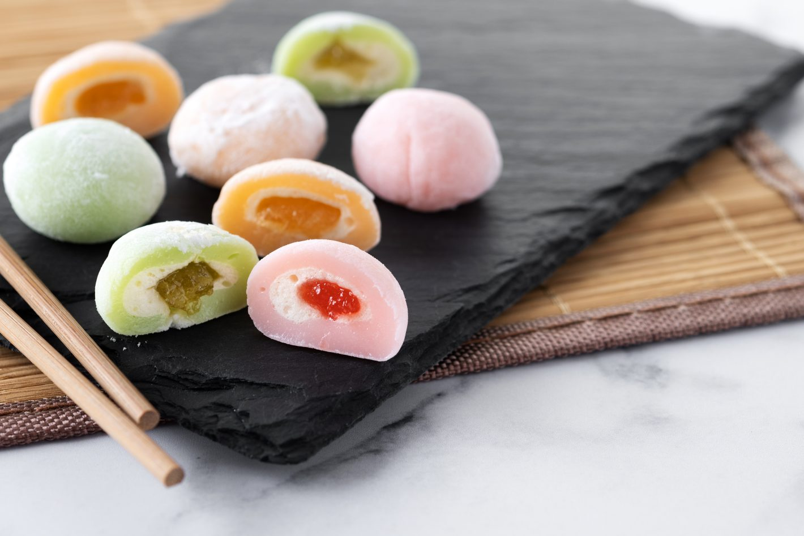

Missoshiro (みそしろ)
Sopa de miso é uma sopa tradicional japonesa que consiste em um caldo dashi no qual pasta de miso amolecida é misturada. Além disso, há muitos ingredientes opcionais que podem ser adicionados dependendo de receitas regionais e sazonais, e preferência pessoal.
Confira aqui!Mochi Morango (いちご餅)
Está à procura de uma sobremesa fácil, mas que fuja da mesmice? O NipoChef tem a opção perfeita para você! Esse Mochi de Morango é um doce simples e extremamente saboroso. Além disso, o recheio de sorvete com geleia de morango dá um toque ainda mais especial à sua receita!
Confira aqui!
Yakisoba (やきそば)
Este prato, composto por uma mistura saborosa de macarrão, carnes e legumes, tornou-se um clássico nos restaurantes orientais e conquistou paladares em todo o mundo. Agora, você terá a oportunidade de preparar sua própria versão deliciosa desse prato tão apreciado!
Confira aqui!
 
